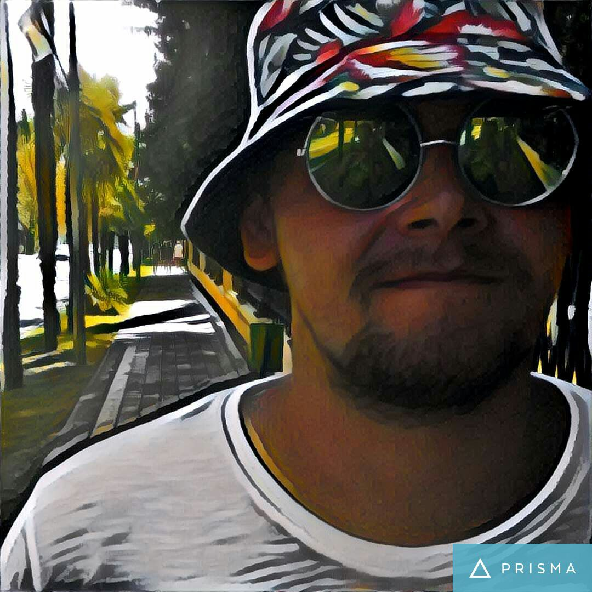
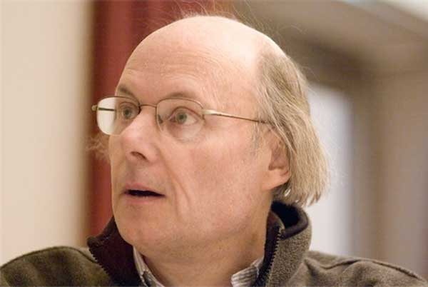
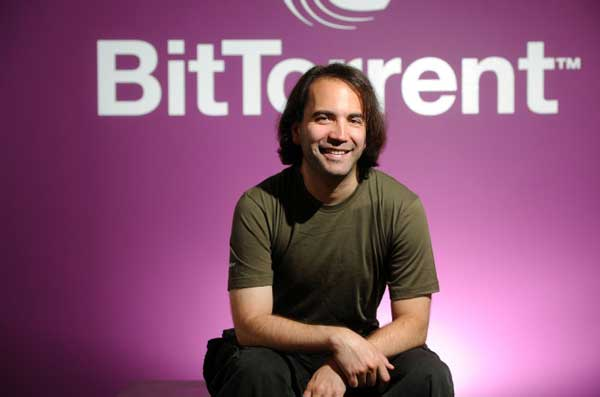
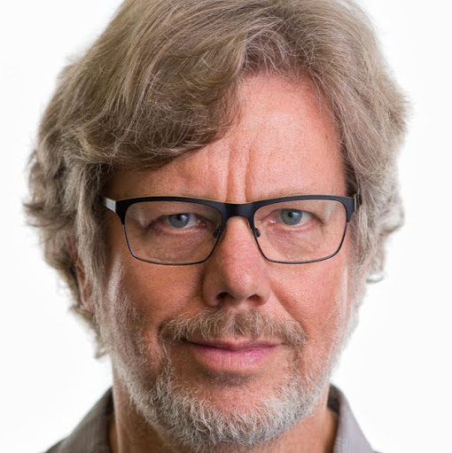

Второй раз в Факт-школе. Второй раз кайфую от процесса получения знаний.
Привет. Мне 32 года. Работаю в ПАО "ММК" машинистом крана металлургического производства. Не первый раз пытаюсь вырваться с завода в IT. Был в 5 группе Факт-школы. Надеюсь теперь платные курсы дадут мне дополнительную мотивацию.

Сэр Тимоти Джон Бе́рнерс-Ли OM — создатель URI, URL, HTTP, HTML и Всемирной паутины

Хокон Виум Ли — учёный, специалист в области информатики, предложивший каскадные таблицы стилей.

Расмус Лердорф — датский программист, написавший в 1994 году интерпретатор языка сценариев PHP

Брендан Эйх или Айк — американский программист, создатель языка программирования JavaScript

Бьёрн Страуступ. Программист из Дании. Создатель знаменитого и очень сложного языка программирования C++, популярность которого не падает уже очень много лет, и вряд ли когда-нибудь упадет.
Ада Лавлейс. Первая женщина-программист, чей интеллект опередил время. С ранних лет начала проявлять интерес к точным наукам, в том числе к математике. Ада была первой дамой, которая разобралась в принципе работы логарифмической вычислительной машины Бэббиджа.


Брэм Коэн. Американский программист, получивший свою популярность за разработку протокола BitTorrent. Именно благодаря ему у нас появилась возможность супер - быстрой передачи данных в сети
Гвидо ван Россум — выдающийся голландский программист. Этот человек создал один из самых популярных и востребованных языков программирования Python.